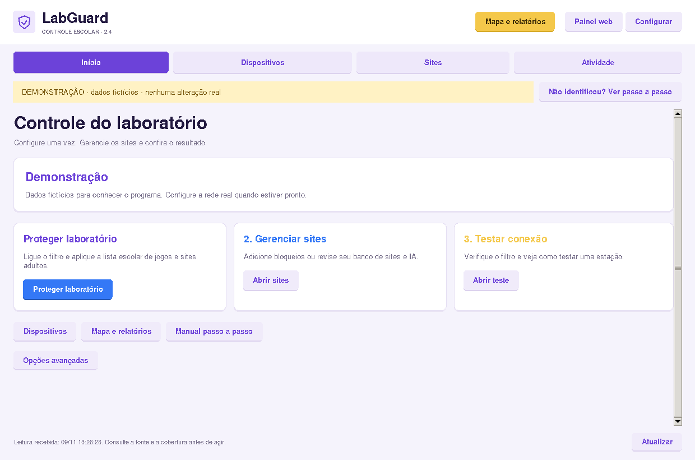

01 / MÁQUINAS
Máquinas
e internet.
Veja IPs e MACs com evidências e confira conflitos ou dados antigos. A amostra local pode ser parcial; controles dependem do equipamento conectado.
Ver na demonstraçãoLAB-03Internet permitida
Use o filtro DNS no PC da TI e o Cliente Automático nos alunos para fechar jogos reconhecidos e aplicar bloqueios locais. A Central acrescenta avisos e controles. Cada programa tem uma função e pode ser conferido antes da distribuição.
TI 2.4.6 • Cliente 2.5.1 • Central 1.2.1

Interface real do aplicativo · dados de demonstração
Consulte o estado da rede e escolha a ação para cada computador ou domínio.
Veja IPs e MACs com evidências e confira conflitos ou dados antigos. A amostra local pode ser parcial; controles dependem do equipamento conectado.
Ver na demonstraçãoVeja os domínios integrados e seus cadastros. Busque o site, selecione a linha e use Bloquear ou Liberar. O item liberado continua na lista para a próxima aula.
Explorar bloqueiosConsulte equipamentos compatíveis, controle portas autorizadas e adicione perfis. Cada adaptador informa exatamente o que oferece.
Conferir compatibilidadeCadastre, busque, importe, exporte e restaure registros. Edite a política mesmo sem conexão e aplique depois, em lotes explícitos.
Conhecer o bancoConsulte jogos reconhecidos por WinRM/HTTPS ou SSH já habilitado. Envie avisos e remova somente pacotes compatíveis, após conferir o computador.
Ver requisitos e limitesVeja o inventário desenhado e exporte o mapa em SVG ou os relatórios em PDF, HTML e CSV. As ligações inferidas ficam identificadas.
Consultar o manualTeste os controles abaixo. Esta demonstração funciona apenas no navegador e não acessa nem altera sua rede.
Use o botão de cada card para simular o controle.
192.168.50.101
192.168.50.102
192.168.50.103
192.168.50.10
Simule a ativação do perfil de domínios cadastrados.
No aplicativo real, o inventário reúne máquinas observadas. Consultas DNS podem vir de serviços em segundo plano e não comprovam uma visita do aluno.
Comece pelos três cards da tela inicial. O filtro recebe consultas DNS das estações configuradas para usar o IP deste PC.
Abra Configurar, escolha a conexão do laboratório e autorize o filtro DNS no IP reservado do PC da TI.
Configure o IP do filtro no DHCP/LAN do Vivo, quando disponível, ou no DNS do Windows. As estações continuam usando a conexão existente.
Use Sites para Bloquear ou Liberar sem perder o cadastro. Em Testar → Diagnóstico manual, confira o DNS na estação piloto. Depois demonstre o antes e depois com poki.com.
Responde e filtra os domínios aplicados. Precisa permanecer ligado.
Usam o IP do LabGuard como DNS. Teste cada estação.
Continuam transportando o tráfego. O switch simples não recebe comandos de bloqueio.
DNS local não corta internet por IP/MAC, não inspeciona HTTPS e não elimina VPN. A opção RouterOS continua disponível para equipamentos compatíveis.
Marca, modelo, firmware, permissões e configuração definem quais ações ficam disponíveis.
| Conexão | Recursos | Requisitos |
|---|---|---|
| Vivo + switch não gerenciávelFiltro DNS no PC LabGuard | Filtra domínios aplicados e mostra consultas DNS recebidas, sem MikroTik obrigatório. | IP reservado, UDP/TCP 53 autorizado e DNS configurado nas estações/DHCP. Não corta internet por IP/MAC. |
| Observação localWindows e Linux | IP local, gateway e vizinhos disponíveis. Mapa e relatórios parciais. | Sem senha de roteador. Não aplica bloqueios. |
| MikroTik RouterOS 7REST por HTTPS | Inventário e regras próprias de IP/MAC/DNS quando os requisitos forem confirmados. | API habilitada, certificado validado e usuário autorizado; diagnóstico de DNS, WAN, IPv6 e FastTrack. |
| TP-Link JetStream e Cisco CatalystCentral de equipamentos por SSH | Inventário e controle de portas de acesso autorizadas, conforme o perfil. | CLI compatível e chave SSH; não inclui filtro de domínios por esses perfis. |
| OpenWrtConsulta por SSH | Consulta de interfaces e concessões DHCP no perfil existente. | Acesso SSH por chave. Perfil somente consulta. |
| Modem Vivo e outros modelos | Observação local disponível. Controle direto depende de um adaptador compatível com o modelo. | O aplicativo não tenta senhas, contorna autenticação ou promete uma API universal. |
O software não intercepta tráfego pela posição do PC. O histórico DNS só aparece quando a fonte fornece esses registros; consultas não comprovam visitas.
O filtro da TI e a proteção dos alunos se complementam. A Central é opcional para receber avisos e enviar regras aos clientes vinculados.
LabGuard-TI-Setup.exe
Mantém o filtro DNS, bancos, mapas, relatórios e integrações. Acrescenta acesso à Central sem substituir a configuração anterior.
LabGuard-Jogos.exe
Ativa a proteção local sem preencher IP ou vínculo. Fecha jogos reconhecidos, agenda a limpeza e aplica o catálogo de 839 domínios nos navegadores abrangidos.
LabGuardTecnico.exe
Painel opcional para vincular estações, acompanhar avisos e usar Sites rápidos. Já pode ser aberto pela edição TI. Sozinho, não é o filtro DNS.
Antes de ativar: a limpeza remove instalações de jogos reconhecidas e pode apagar saves e mundos das pastas abrangidas. Confira o manual e teste uma estação com backup.
Escolha o programa, instale, confira os bloqueios, atualize preservando dados e encontre a solução para falhas comuns.
Ler manual de instalação e usoBaixar PDF atualizadoPrepare o filtro no PC da TI, distribua o DNS e confira um computador piloto sem instalar um aplicativo nele.
Configurar o laboratórioVer instalador atual da TIConsulte o banco de sites, o mapa, os relatórios e as integrações opcionais da edição de rede.
Ler o manual completoBaixar o manual em PDFResolver falha de identificação ↗Diagnostique o DNS e configure a estação escolhida com IPv6 desabilitado no adaptador, com backup e restauração.
Abrir o guia e a ferramentaDemonstrar Bloquear e LiberarSe já instalou o Cliente ↗O filtro DNS funciona no próprio PC da TI ou professor. Outros controles dependem de uma integração compatível.
Para a proteção local de jogos e os avisos da Central, instale o Cliente Automático 2.5.1 em cada PC dos alunos. A proteção local começa sem vínculo. Instalar cliente.
Já o filtro DNS da TI pode atender sem cliente instalado. A edição de rede funciona com o LabGuard no PC da TI. As estações precisam usar o IP do filtro como DNS, distribuído pelo DHCP/LAN do roteador quando disponível ou configurado no Windows. O teste manual pelo CMD dispensa WinRM. Seguir o guia sem cliente.
As estações deixam de receber respostas desse DNS. Mantenha o PC e o programa ligados; restaure o DNS anterior antes de parar. A opção Ligar este filtro ao abrir o LabGuard vale para a abertura do aplicativo e não instala início automático com o Windows.
A edição TI 2.4.6 é atualizada manualmente com seu próprio Setup; Verificar atualizações abre as versões do canal TI. A atualização automática do pacote de rede comum fica desabilitada nesta edição para preservar seus componentes. O Cliente Automático inicia as tarefas com o Windows e é atualizado executando o novo EXE. Linux, portátil e servidores usam seus pacotes próprios. Ver instruções e limites.
Não para observação local ou administração direta de um roteador compatível que já controla a rede. O modo gateway anterior continua disponível como opção avançada.
Abrir o passo a passo completo. Não inclua senhas, tokens ou chaves ao pedir suporte.
O filtro DNS local funciona sem API do modem. A TI pode distribuir o DNS pelo DHCP/LAN do Vivo, quando disponível, por política institucional ou configurar o DNS do adaptador Windows. A administração por WinRM é opcional. Controle direto e corte de internet pelo modem continuam dependendo do modelo e integração.
Não. No filtro local, as estações precisam usar o DNS do LabGuard. Corte de internet exige outro controle compatível. Redes de convidados, isolamento e NAT também podem limitar a observação. O aplicativo não faz ataques ARP, interceptação ou desautenticação Wi-Fi.
O histórico depende dos registros fornecidos pela fonte. O filtro local registra somente consultas DNS que recebe. Observação e inventário RouterOS não fornecem esse histórico por aluno. Consultas não comprovam visitas. Conteúdo HTTPS, mensagens e URLs completas não são coletados.
Em Sites cadastrados e integrados, use a busca e os filtros, selecione o domínio e clique em Bloquear ou Liberar. Liberar mantém o cadastro inativo na lista. Um domínio pai, o perfil de IA ou o DNS de saída ainda pode restringir o endereço. Confira a navegação na estação. Demonstrar com poki.com.
O Cliente Automático 2.5.1 remove instalações reconhecidas de jogos, launchers e emuladores nas estações em que foi ativado. Repete a limpeza a cada cinco minutos e pode apagar saves das pastas abrangidas. Programas desconhecidos e ISOs não são apagados apenas pelo nome ou extensão. O filtro DNS sozinho não remove jogos. Ver o que é reconhecido e como conferir.